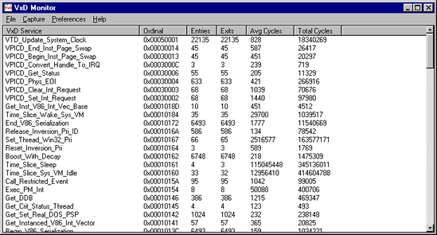

Windows 95 does not provide any native support for monitoring the performance of VxD services. VxDMon is a system monitoring tool that allows you to profile Windows 95 VxD performance and behavior. VxDMon's functionality is built on VxD service hooking. By using service hooking, VxDMon is able to monitor and time, via the Pentium's rdtsc (ReaD Time Stamp Counter) instruction, any and all VxD services including those of VxDs built into Windows and those added by a developer. In addition, VxDMon keeps track of VxD service call histories so that it can display useful information such as the list of all services that were called by a particular service during a monitoring session. This combination of VxD performance and call history information provides a never-before-seen look into the behavior of Windows.
VxDMon was designed for Pentium processors and requires that VXDMON.EXE be in the same directory as VXDMON.VXD. It will run on a 386 or 486 processor, but performance information will not be available since only the Pentium has a cycle counter. VXDMON.VXD is a dynamic VxD, meaning that no changes to system.ini or the registry are necessary. The typical way VxDMon is used is demonstrated in the following steps:
When VxDMon is started it checks to see if a hook profile exists in a file in the current directory called profile.dat. If a profile exists, VxDMon will ask if you desire that the services listed in the profile should be hooked. If no profile exists, the main window will open without a prompt. To create a hook profile the Options|Select Services menu item must be selected, which will open a tree-view containing all the services listed in a file called services.dat. When a service is clicked upon in this view, it will toggle between a selected state, indicated with a green icon, and an unselected state, indicated with a red icon. Yellow icons are used to identify VxDs that have some, but not all, of their services selected for monitoring. After a profile has been created, VxDMon must be told to begin monitoring the services selected. Choose the Options|Hook Now menu item in the selection window. A profile can be saved by choosing Options|Save Hook List.
Monitoring begins as soon as the services are hooked, and the statistics gathered by VxDMon's VxD can be imported into the user interface by choosing Options|Update Statistics in the main window. The latest statistics are read from the VxD by selecting Options|Update, and reset to zero by selecting Options|Reset. Depending on the value of the Preferences|Zero Statistics on Update selection, Options|Update either accumulates the counts (off), or gives the counts since the previous Update (on).
Control-flow information can be seen by double clicking on a service in the main window, or by highlighting a service and choosing Options|Show Ancestors or Options|Show Descendants. A services ancestors are all services that preceeded the service in the control-flow. The immediate ancestors of a service include all the services that directly called it. Correspondingly, the descendants of a service are those services that followed it in the control-flow. The immediate descendants are those services that were directly called by the service. When ancestor or descendant information is selected, a new sub-window is opened that displays the control-flow hierarchy as a tree-view. The same ancestor/descendant selection facilities are available in the sub-window so that other services can have control-flow windows opened for them. Finally, both the main window and the control-flow windows have save capabilities that dump the windows contents in formatted ASCII to a file.
VxDMon includes full on-line help that describes these steps in detail. It also tells you how you can add information about your own VxD to VxDMon's database in order that VxDMon can monitor your own VxD services.
This is a screenshot of VxDMon's statistics for a sample of typical Win95 activity, and a call-graph showing VxD services that invoke a particular VMM service.
VxDMon comes with full source code. Unlike many of our other Windows 95 VxD's, VxDMon is written in assembly language so you can build it with the Windows 95 DDK. The VxDMon GUI was built with Visual C++ 2.x.